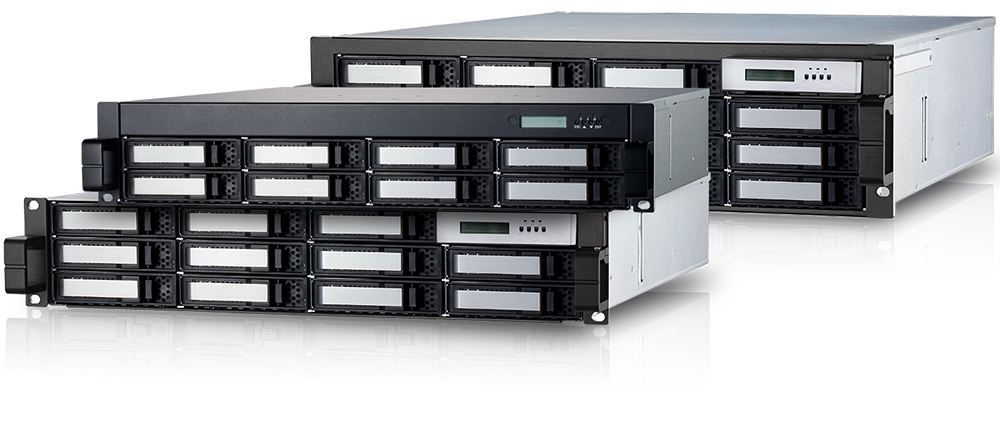
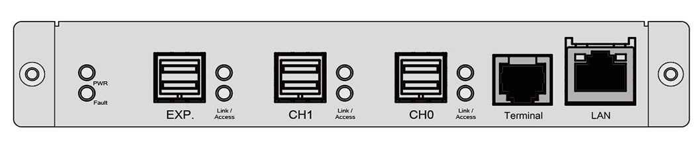

ARC-72xx series
(12Gb/s SAS to SAS RAID Storage Subsystem)

System Architecture
✵ Dual Core RAID-on-Chip (ROC) 1.2 GHz
✵ On-board 2GB DDR3-1866 ECC SDRAM
✵ Write-through or write-back cache support
✵ Redundant flash image for adapter availability
✵ Flashed-based/Battery backup module ready (optional)
Faster Than Ever
Availability & Security
Unparalleled Performance
Host Interface
2 x SFF-8644 external connectors
8 x 12Gb/s SAS ports
(4-ports per connector)

High Performance ROC
Dual Core RAID-on-Chip (ROC) 1.2 GHz
2GB DDR3-1866 ECC Protection
Drive Interface
Up to 8/12/16 x 3.5”/2.5”
12Gb/s SAS or 6Gb/s and 3Gb/s
SAS/SATA HDDs/SSDs
One downstream SFF-8644 (4x12Gb/s)
expansion connector
12Gb/s SAS to SAS RAID Storage Subsystem

The ARC-72xx RAID subsystem is a family of 8/12/16 12.0Gbps SAS hard drive ports depending upon the amount of storage required. The 12Gb/s SAS interface supports both 12Gb/s SAS disk drives for data-intensive applications and 6Gb/s SATA drives for low-cost bulk storage of reference data. The SAS to 12Gb/s SAS RAID controllers attach directly to SATA/SAS midplanes and increase capacity using one additional HD SFF-8644 external connector.
The ARC-72xx SAS to SAS RAID subsystem provides 12Gb/s SAS host interface link to the host board on the server system. This RAID controller utilizes the same RAID kernel that has been field-proven in existing internal/external SATA/SAS RAID controller products, allowing to bring stable and reliable SAS RAID external subsystem. The ARC-72xx provides 2U/3U rack-mounted external storage chassis capable of accommodating up to 8/12/16 12.0-Gb/s, Serial-Attached SCSI (SAS) drives or 6.0-Gb/s Serial ATA (SATA) drives.
| Cost-Effective ARC-72xx Series 12Gb/s SAS RAID Subsystem | |||
| ARC-7208SS-DR2 | ARC-7212SS-DR2 | ARC-7216SS-DR3 | |
| Internal Ports | 8 x 3.5”/2.5” SAS | 12 x 3.5”/2.5” SAS | 16 x 3.5”/2.5” SAS |
| Data Transfer Rate | Up to 12Gb/s per port | ||
| Cache Protection | 2GB DDR3-1866 ECC Protection | ||
| Host Interface | two Mini-SAS HD SFF-8644 connectors | ||
| Expansion Support | Up to 512 devices using SAS expanders (one external Mini-SAS HD SFF-8644 connector) | ||
| Processor | Dual Core RAID-on-Chip (ROC) 1.2 GHz processor | ||
| RAID Features |
• RAID level 0, 1, 10(1E), 3, 5, 6, 30, 50, 60, Single Disk or JBOD • Multiple RAID 0 and RAID 10(1E) support (RAID 00 and RAID 100) • Configurable stripe size up to 1024KB • Automatic drive failover and detection and rebuild using multiple Global, Dedicated or Enclosure hot- spare drives • Multiple pairs SSD/HDD disk clone function • SSD automatic monitor clone (AMC) support • SED (Self-encrypting drives) function support • Support for native 4K and 512 byte sector devices • Support HDD firmware update • Hot-swap and redundant components for increasing availability |
||
| RAID Management Software |
• Flashable firmware via RS-232 and LAN port • Push Buttons and LCD for setup and status • Firmware-embedded manager via RS-232 port • Browser-based RAID manager, SMTP manager, SNMP agent and Telnet function • API with sample and functional code • ArcCLI (command-line interface) • ArcSAP monitor utility easily manage multiple RAID units |
||
| Operating Systems | OS Independent | ||
| Physical Dimensions (H x W x D) |
88.2 x 482 x 484 mm (3.5” x 18.9” x 19”) |
88.2 x 482 x 484 mm (3.5” x 18.9” x 19”) |
132.6 x 482 x 484 mm (5.2” x 18.9” x 19”) |
| Weight | 36.4 lbs / 16.5 kg | 37.5 lbs / 17 Kg | 38.6 lbs / 17.5 Kg |
| Power Supply | Dual 400W hot swap and redundant | ||
| Operating Temperature | 0 °C to 40 °C | ||
| Operating Humidity | 10% to 80%, non-condensing | ||
| Regulatory Certification | CE, FCC | ||
| Warranty | 3 years | ||
| FBM/BBM Support | ARC-1883-CAP-7 / ARC-6120BAT121-7 | ||
Downloads
| File | Version | Date |
|---|---|---|
| ARC-72xx firmware | 1.56 |
2019/07/23 |
|
1. Patch HGST G3 enclosure SES2 firmware update problem 2. Seagate XS960SE70004 firm rev 002, 960GB SSD problem 3. Add progress % for some http operation 4. Fix SEAGATE 84bay JBOD does not report slot string 5. Improve FAIL_DRIVE_IF_MANY_ERROR |
||